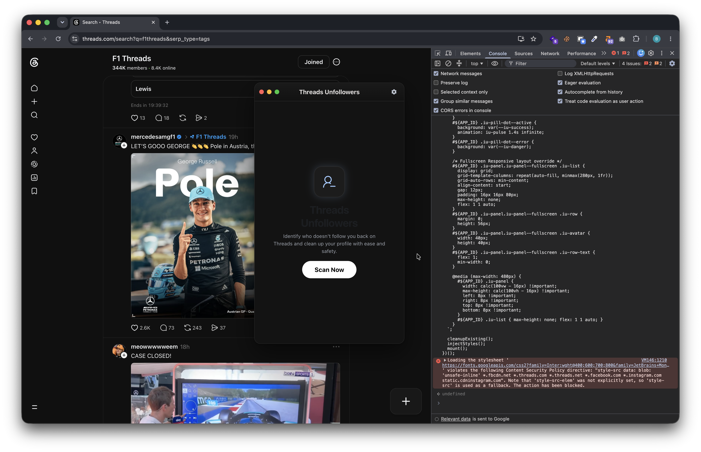
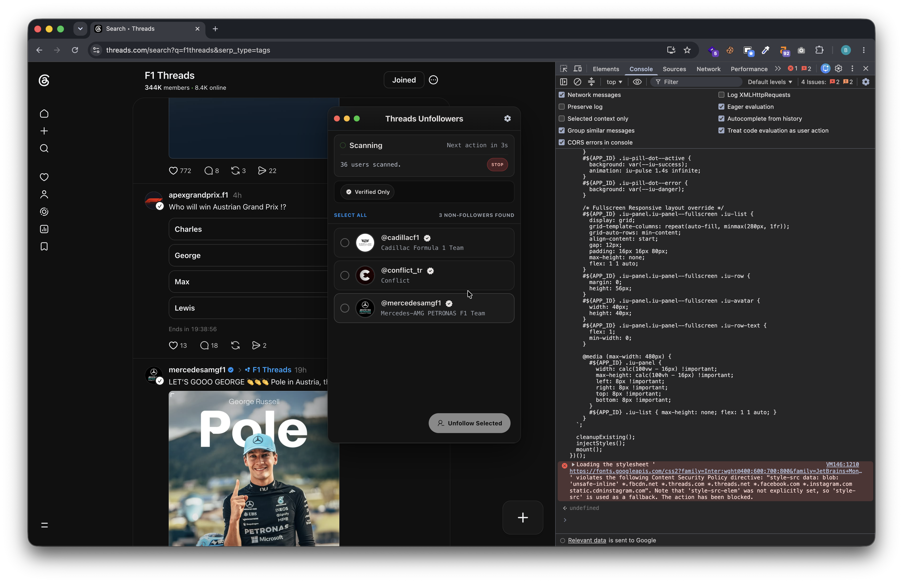

// with console · zero install
See exactly who on Threads doesn't follow you back.
Paste one script into your browser console while you're on Threads. It reads your following list and prints the names that don't follow you back. That's the whole tool.
(()=>{'use strict';const allowedHosts=['www.threads.com','threads.com'];if(!allowedHosts.includes(location.hostname)){console.error('Please run this script on threads.com!');alert('Open https://www.threads.com first, then paste this script again.');return;}const APP_ID='tu-app';const STYLE_ID='tu-style';const STORAGE_KEY='tu_state_v1';const DEV=false;function log(...args){if(DEV){console.log('[DEV]',...args);}}const DEFAULT_TIMINGS={scanDelayMin:700,scanDelayMax:5000,unfollowDelayMin:1000,unfollowDelayMax:3000,unfollowPauseEveryUsers:10,unfollowPauseMs:10000,};const PANEL_MARGIN=18;const MAX_RETRIES=3;const SVG={minimize:`<svg viewBox="0 0 16 16" width="12" height="12"><rect x="2" y="7" width="12" height="2" rx="1" fill="#000" opacity="0.7"/></svg>`,close:`<svg viewBox="0 0 16 16" width="12" height="12"><path d="M4 4l8 8M12 4l-8 8" stroke="#000" stroke-width="2" stroke-linecap="round" opacity="0.7"/></svg>`,expand:`<svg viewBox="0 0 16 16" width="12" height="12"><path d="M3 9h4V5H3v4zm6-4v4h4V5H9z" fill="#000" opacity="0.7"/></svg>`,gear:`<svg viewBox="0 0 24 24" width="16" height="16" fill="currentColor"><path d="M0 0h24v24H0z" fill="none" /><path fill="currentColor" d="m9.25 22l-.4-3.2q-.325-.125-.612-.3t-.563-.375L4.7 19.375l-2.75-4.75l2.575-1.95Q4.5 12.5 4.5 12.338v-.675q0-.163.025-.338L1.95 9.375l2.75-4.75l2.975 1.25q.275-.2.575-.375t.6-.3l.4-3.2h5.5l.4 3.2q.325.125.613.3t.562.375l2.975-1.25l2.75 4.75l-2.575 1.95q.025.175.025.338v.674q0 .163-.05.338l2.575 1.95l-2.75 4.75l-2.95-1.25q-.275.2-.575.375t-.6.3l-.4 3.2zm2.8-6.5q1.45 0 2.475-1.025T15.55 12t-1.025-2.475T12.05 8.5q-1.475 0-2.488 1.025T8.55 12t1.013 2.475T12.05 15.5" /></svg>`,check:`<svg viewBox="0 0 16 16" width="14" height="14" fill="none" stroke="currentColor" stroke-width="3" stroke-linecap="round" stroke-linejoin="round"><polyline points="13.5 4.5 6 12 2.5 8.5"/></svg>`,personRemove:`<svg viewBox="0 0 24 24" width="48" height="48"><path d="M0 0h24v24H0z" fill="none" /><g fill="none" stroke="currentColor" stroke-linecap="round" stroke-linejoin="round" stroke-width="1.5"><path d="M15 8.5a5 5 0 1 0-10 0a5 5 0 0 0 10 0M14 19h7" /><path d="M3 20.5a7 7 0 0 1 11-5.745" /></g></svg>`,personRemoveSmall:`<svg viewBox="0 0 24 24" width="16" height="16" style="display:inline-block;vertical-align:middle;"><path d="M0 0h24v24H0z" fill="none" /><g fill="none" stroke="currentColor" stroke-linecap="round" stroke-linejoin="round" stroke-width="1.5"><path d="M15 8.5a5 5 0 1 0-10 0a5 5 0 0 0 10 0M14 19h7" /><path d="M3 20.5a7 7 0 0 1 11-5.745" /></g></svg>`,warning:`<svg viewBox="0 0 24 24" width="48" height="48" fill="currentColor"><path d="M1 21h22L12 2 1 21zm12-3h-2v-2h2v2zm0-4h-2v-4h2v4z"/></svg>`,verified:`<svg viewBox="0 0 24 24" width="16" height="16" fill="#0095f6" style="display:inline-block;vertical-align:middle;margin:0 2px;"><path d="M0 0h24v24H0z" fill="none" /><path fill="currentColor" d="M10.95 12.7L9.5 11.275Q9.225 11 8.813 11t-.713.3q-.275.275-.275.7t.275.7l2.15 2.15q.3.3.7.3t.7-.3l4.25-4.25q.3-.3.287-.7t-.287-.7q-.3-.3-.712-.312t-.713.287zm-2.8 9.05L6.7 19.3l-2.75-.6q-.375-.075-.6-.387t-.175-.688L3.45 14.8l-1.875-2.15q-.25-.275-.25-.65t.25-.65L3.45 9.2l-.275-2.825q-.05-.375.175-.688t.6-.387l2.75-.6l1.45-2.45q.2-.325.55-.438t.7.038l2.6 1.1l2.6-1.1q.35-.15.7-.038t.55.438L17.3 4.7l2.75.6q.375.075.6.388t.175.687L20.55 9.2l1.875 2.15q.25.275.25.65t-.25.65L20.55 14.8l.275 2.825q.05.375-.175.688t-.6.387l-2.75.6l-1.45 2.45q-.2.325-.55.438t-.7-.038l-2.6-1.1l-2.6 1.1q-.35.15-.7.038t-.55-.438" /></svg>`,chevronRight:`<svg viewBox="0 0 24 24" width="20" height="20" fill="none" stroke="currentColor" stroke-width="2.5" stroke-linecap="round" stroke-linejoin="round" style="display:inline-block;vertical-align:middle;"><polyline points="9 18 15 12 9 6"/></svg>`,timer:`<svg viewBox="0 0 24 24" width="18" height="18" fill="none" stroke="currentColor" stroke-width="2" stroke-linecap="round" stroke-linejoin="round" style="display:inline-block;vertical-align:middle;"><circle cx="12" cy="12" r="10"/><polyline points="12 6 12 12 16 14"/></svg>`,reload:`<svg viewBox="0 0 24 24" width="14" height="14" fill="none" stroke="currentColor" stroke-width="2.5" stroke-linecap="round" stroke-linejoin="round" style="display:inline-block;vertical-align:middle;"><path d="M23 4v6h-6M1 20v-6h6M3.51 9a9 9 0 0 1 14.85-3.36L23 10M1 14l4.64 4.36A9 9 0 0 0 20.49 15"/></svg>`};const persisted=loadStored();const state={mode:'idle',prevMode:'idle',scanCancelled:false,progress:{current:0,total:0,label:'Scanning',note:''},waitUntil:0,waitReason:'',users:[],selected:new Set(),filters:persisted.filters||{verified:false,},timings:{...DEFAULT_TIMINGS,...(persisted.timings||{})},panelPos:persisted.panelPos||null,minimized:Boolean(persisted.minimized),fullscreen:Boolean(persisted.fullscreen),error:'',};let countdownTimer=null;let toastTimer=null;function loadStored(){try{const raw=localStorage.getItem(STORAGE_KEY);return raw?JSON.parse(raw):{};}catch{return{};}}function persist(){try{localStorage.setItem(STORAGE_KEY,JSON.stringify({timings:state.timings,filters:state.filters,panelPos:state.panelPos,minimized:state.minimized,fullscreen:state.fullscreen,}));}catch{}}function setMinimized(val){state.minimized=val;persist();renderShell();}function pillLabel(){if(state.mode==='scanning')return'Scanning...';if(state.mode==='unfollowing')return'Unfollowing...';if(state.error)return'Error';return'Open';}function pillStateClass(){if(state.mode==='scanning'||state.mode==='unfollowing')return'iu-pill-dot--active';if(state.error)return'iu-pill-dot--error';return'';}function renderBody(){const body=document.querySelector(`#${APP_ID} [data-body]`);if(!body)return;if(state.mode==='idle'){body.innerHTML=renderWelcomeView();bindWelcomeEvents(body);}else if(state.mode==='settings'){body.innerHTML=renderSettingsView();bindSettingsEvents(body);}else{body.innerHTML=renderResultsView();bindResultsEvents(body);}if(state.mode==='scanning'||state.mode==='unfollowing')startCountdown();else stopCountdown();}function renderWelcomeView(){if(state.error){return`
<div class="iu-welcome">
<div class="iu-welcome-icon iu-welcome-icon--error">
${SVG.warning}
</div>
<div class="iu-welcome-text">
<h2>Scan Failed</h2>
<p class="iu-welcome-description">${escapeHTML(state.error)}</p>
</div>
<div class="iu-welcome-action">
<button type="button" class="iu-btn iu-btn-welcome" data-action="scan">Try Again</button>
</div>
</div>
`;}return`
<div class="iu-welcome">
<div class="iu-welcome-icon">
${SVG.personRemove}
</div>
<div class="iu-welcome-text">
<h2>Threads<br>Unfollowers</h2>
<p class="iu-welcome-description">Identify who doesn't follow you back on Threads and clean up your profile with ease and safety.</p>
</div>
<div class="iu-welcome-action">
<button type="button" class="iu-btn iu-btn-welcome" data-action="scan">Scan Now</button>
</div>
</div>
`;}function bindWelcomeEvents(body){body.querySelector("[data-action='scan']")?.addEventListener('click',startScan);}function renderSettingsView(){return`
<div class="iu-settings">
<div class="iu-settings-head">
<h2>Configuration</h2>
<p>Manage scan intervals.</p>
<button type="button" class="iu-reset-btn" data-action="restore-defaults">Reset All</button>
</div>
<div class="iu-settings-form">
<div class="iu-settings-section-header">
<span class="iu-svg-icon text-primary">${SVG.timer}</span>
<h3>RATE LIMITING (MILLISECONDS)</h3>
</div>
<div class="iu-settings-field">
<div class="iu-settings-label-row">
<label>Min Scan Delay</label>
<span class="iu-settings-val" data-val="scanDelayMin">${state.timings.scanDelayMin}ms</span>
</div>
<input type="range" min="500" max="30000" step="100" data-setting="scanDelayMin" value="${state.timings.scanDelayMin}">
<p class="iu-settings-help">Minimum wait time between profile requests.</p>
</div>
<div class="iu-settings-field">
<div class="iu-settings-label-row">
<label>Max Scan Delay</label>
<span class="iu-settings-val" data-val="scanDelayMax">${state.timings.scanDelayMax}ms</span>
</div>
<input type="range" min="1000" max="60000" step="500" data-setting="scanDelayMax" value="${state.timings.scanDelayMax}">
<p class="iu-settings-help">Maximum random jitter for request intervals.</p>
</div>
<div class="iu-settings-field">
<div class="iu-settings-label-row">
<label>Min Unfollow Delay</label>
<div class="iu-settings-num-input-wrapper">
<input type="number" min="1000" step="500" data-setting="unfollowDelayMin" value="${state.timings.unfollowDelayMin}">
<span>ms</span>
</div>
</div>
<p class="iu-settings-help">Safe interval before triggering an unfollow action.</p>
</div>
<div class="iu-settings-field">
<div class="iu-settings-label-row">
<label>Max Unfollow Delay</label>
<div class="iu-settings-num-input-wrapper">
<input type="number" min="2000" step="500" data-setting="unfollowDelayMax" value="${state.timings.unfollowDelayMax}">
<span>ms</span>
</div>
</div>
<p class="iu-settings-help">Maximum wait time to mimic human behavior.</p>
</div>
<div class="iu-settings-field">
<div class="iu-settings-label-row">
<div class="iu-settings-label-stack">
<label>Long Delay</label>
<span class="iu-settings-badge-green">Multiple actions required long delay</span>
</div>
<span class="iu-settings-val" data-val="unfollowPauseMs">${state.timings.unfollowPauseMs}ms</span>
</div>
<input type="range" min="10000" max="1800000" step="10000" data-setting="unfollowPauseMs" value="${state.timings.unfollowPauseMs}">
<p class="iu-settings-help">Wait time after every 50 unfollows to avoid shadowbans.</p>
</div>
</div>
<div class="iu-settings-actions">
<button type="button" class="iu-btn-save" data-action="save-settings">Save Changes</button>
<button type="button" class="iu-btn-discard" data-action="cancel-settings">Discard</button>
</div>
</div>
`;}function bindSettingsEvents(body){body.querySelectorAll('input[type="range"]').forEach(slider=>{slider.addEventListener('input',e=>{const name=slider.getAttribute('data-setting');const display=body.querySelector(`[data-val="${name}"]`);if(display){display.textContent=`${e.target.value}ms`;}});});body.querySelector("[data-action='save-settings']")?.addEventListener('click',()=>{let valid=true;body.querySelectorAll('[data-setting]').forEach(input=>{const key=input.getAttribute('data-setting');const val=Number(input.value);if(Number.isFinite(val)&&val>=0){state.timings[key]=val;}else{valid=false;}});if(!valid){toast('Please enter valid non-negative numbers');return;}persist();toast('Settings saved');state.mode=state.prevMode;renderShell();});body.querySelector("[data-action='cancel-settings']")?.addEventListener('click',()=>{state.mode=state.prevMode;renderShell();});body.querySelector("[data-action='restore-defaults']")?.addEventListener('click',()=>{Object.assign(state.timings,DEFAULT_TIMINGS);renderBody();toast('Default timings restored');});}function statusClass(){if(state.mode==='scanning'||state.mode==='unfollowing')return'active';if(state.mode==='stopped')return'stopped';if(state.mode==='completed')return'completed';return'idle';}function statusTitle(){if(state.mode==='scanning')return'Scanning';if(state.mode==='unfollowing')return'Unfollowing';if(state.mode==='stopped')return'Stopped';if(state.mode==='completed')return'Completed';return'Idle';}function statusDetails(){if(state.mode==='scanning'){return`${state.progress.current} users scanned.`;}if(state.mode==='unfollowing'){return`@${escapeHTML(state.progress.note || '')} (${state.progress.current} / ${state.progress.total})`;}if(state.mode==='stopped'){return'Process stopped by user.';}if(state.mode==='completed'){return state.progress.note||'Process completed successfully.';}return'';}function showStopButton(){return state.mode==='scanning'||state.mode==='unfollowing';}function showReloadButton(){return state.mode==='completed'||state.mode==='stopped';}function isAllSelected(){const display=getDisplayUsers();if(!display.length)return false;return display.every(user=>state.selected.has(user.id));}function renderResultsView(){const display=getDisplayUsers();const selectedCount=display.filter(u=>state.selected.has(u.id)).length;return`
<div class="iu-results">
<div class="iu-status-card">
<div class="iu-status-row">
<div class="iu-status-left">
<span class="iu-status-dot iu-status-dot--${statusClass()}"></span>
<span class="iu-status-title">${statusTitle()}</span>
</div>
<div class="iu-status-right" data-countdown></div>
</div>
<div class="iu-status-details-row">
<span class="iu-status-details">${statusDetails()}</span>
${showStopButton() ? `<button type="button"class="iu-status-btn-stop"data-action="stop-process">Stop</button>` : ''}
${showReloadButton() ? `<button type="button" class="iu-status-btn-reload" data-action="rescan" aria-label="Rescan" title="Rescan">${SVG.reload}</button>` : ''}
</div>
</div>
<section class="iu-filter-section">
<button type="button" class="iu-filter-verified ${state.filters.verified ? 'iu-filter-verified--active' : ''}" data-action="toggle-verified">
${SVG.verified}
<span>Verified Only</span>
</button>
</section>
<div class="iu-list-header-bar">
<button type="button" class="iu-select-all-btn" data-action="toggle-select-all">
${isAllSelected() ? 'Deselect All' : 'Select All'}
</button>
<span class="iu-list-header-info">${display.length} non-followers found</span>
</div>
<div class="iu-list" data-list>${renderUserList(display)}</div>
<div class="iu-fab-container">
<button type="button" class="iu-fab-btn" data-action="unfollow-selected" ${selectedCount > 0 ? '' : 'disabled'}>
${SVG.personRemoveSmall}
<span>Unfollow Selected</span>
</button>
</div>
</div>
`;}function renderUserList(display){if(!display.length){if(state.mode==='scanning'){return`<div class="iu-list-empty">Loading the people you follow...</div>`;}return`<div class="iu-list-empty">No users match your filters.</div>`;}return display.map(renderUserRow).join('');}function renderUserRow(user){const verifiedIcon=user.is_verified?`<span>${SVG.verified}</span>`:'';return`
<div class="iu-row" data-row="${escapeAttr(user.id)}">
<label class="iu-row-checkbox">
<input type="checkbox" data-select="${escapeAttr(user.id)}" ${state.selected.has(user.id) ? 'checked' : ''}>
<span class="iu-checkbox-custom">${SVG.check}</span>
</label>
<img class="iu-avatar" src="${escapeAttr(user.profile_pic_url || '')}" alt="" loading="lazy" onerror="this.style.visibility='hidden'">
<div class="iu-row-text">
<div class="iu-row-name-wrapper">
<span class="iu-row-name">
<a href="https://www.threads.com/@${encodeURIComponent(user.username)}" target="_blank" rel="noopener noreferrer">@${escapeHTML(user.username)}</a>
</span>
${verifiedIcon}
</div>
<div class="iu-row-sub">${escapeHTML(user.full_name || '')}</div>
</div>
</div>
`;}function bindResultsEvents(body){body.querySelector("[data-action='toggle-verified']")?.addEventListener('click',()=>{state.filters.verified=!state.filters.verified;persist();renderBody();});body.querySelector("[data-action='toggle-select-all']")?.addEventListener('click',()=>{if(isAllSelected()){clearSelection();}else{selectAllVisible();}renderBody();});body.addEventListener('click',event=>{const row=event.target.closest('.iu-row');if(!row)return;if(event.target.closest('a')){return;}const checkbox=row.querySelector('input[data-select]');if(!checkbox)return;if(!event.target.closest('.iu-row-checkbox')){checkbox.checked=!checkbox.checked;}const id=checkbox.getAttribute('data-select');if(id){if(checkbox.checked)state.selected.add(id);else state.selected.delete(id);}const display=getDisplayUsers();const selectedCount=display.filter(u=>state.selected.has(u.id)).length;const fab=body.querySelector("[data-action='unfollow-selected']");if(fab){fab.disabled=selectedCount===0;}const selectAllBtn=body.querySelector("[data-action='toggle-select-all']");if(selectAllBtn){selectAllBtn.textContent=isAllSelected()?'Deselect All':'Select All';}});body.querySelector("[data-action='unfollow-selected']")?.addEventListener('click',startUnfollowSelected);body.querySelector("[data-action='stop-process']")?.addEventListener('click',()=>{state.scanCancelled=true;});body.querySelector("[data-action='rescan']")?.addEventListener('click',()=>{startScan();});}function selectAllVisible(){getDisplayUsers().forEach(user=>state.selected.add(user.id));}function clearSelection(){state.selected.clear();}function getDisplayUsers(){return state.users.filter(u=>!u.follows_viewer).filter(u=>!state.filters.verified||u.is_verified).sort((a,b)=>a.username.localeCompare(b.username));}let cachedTokens=null;function getPageTokens(){if(cachedTokens)return cachedTokens;const tokens={webSessionId:'',jazoest:'',fbid:'',username:'',followingCount:0,lsd:'',fbDtsg:'',__req:'',__hs:'',__ccg:'',__rev:'',__s:'',__hsi:'',__dyn:'',__spin_r:'',};if(window.LSD?.token)tokens.lsd=window.LSD.token;if(window.__LSD__?.token)tokens.lsd=window.__LSD__.token;if(window.DTSGInitData?.token)tokens.fbDtsg=window.DTSGInitData.token;if(window.__DTSGInitData__?.token)tokens.fbDtsg=window.__DTSGInitData__.token;const scripts=document.querySelectorAll('script');const metaPatterns={__req:[/"__req":"([^"]+)"/,/__req=([^&]+)/],__hs:[/"__hs":"([^"]+)"/,/__hs=([^&]+)/],__ccg:[/"__ccg":"([^"]+)"/,/__ccg=([^&]+)/],__rev:[/"__rev":"([^"]+)"/,/__rev=([^&]+)/],__s:[/"__s":"([^"]+)"/,/__s=([^&]+)/],__hsi:[/"__hsi":"([^"]+)"/,/__hsi=([^&]+)/],__dyn:[/"__dyn":"([^"]+)"/,/__dyn=([^&]+)/],__spin_r:[/"__spin_r":"([^"]+)"/,/__spin_r=([^&]+)/],};const fbDtsgPattern=/NAf[a-zA-Z0-9_\-\/]+(?::|%3A)\d+(?::|%3A)\d+/;for(const script of scripts){const text=script.textContent||'';if(!text)continue;if(!tokens.webSessionId){const match=text.match(/"web_session_id":"([^"]+)"/)||text.match(/"x-web-session-id":"([^"]+)"/);if(match)tokens.webSessionId=match[1];}if(!tokens.jazoest){const match=text.match(/jazoest=([0-9]+)/)||text.match(/"jazoest":"([^"]+)"/);if(match)tokens.jazoest=match[1];}if(!tokens.fbid){const match=text.match(/"ACCOUNT_ID":"([^"]+)"/)||text.match(/"USER_ID":"([^"]+)"/)||text.match(/"fbid":"([^"]+)"/);if(match&&match[1]&&match[1]!=='0')tokens.fbid=match[1];}if(!tokens.username){const match=text.match(/"username":"([^"]+)"/);if(match)tokens.username=match[1];}if(!tokens.followingCount){const match=text.match(/"following_count":\s*(\d+)/);if(match)tokens.followingCount=parseInt(match[1],10);}if(!tokens.lsd){const match=text.match(/"LSD",\[\],{"token":"([^"]+)"}/)||text.match(/"lsd":"([^"]+)"/);if(match)tokens.lsd=match[1];}if(!tokens.fbDtsg){const match=text.match(fbDtsgPattern)||text.match(/"DTSGInitData",\[\],{"token":"([^"]+)"}/)||text.match(/"fb_dtsg":"([^"]+)"/);if(match)tokens.fbDtsg=decodeURIComponent(match[1]||match[0]);}for(const key in metaPatterns){if(!tokens[key]){for(const pattern of metaPatterns[key]){const match=text.match(pattern);if(match){tokens[key]=match[1];break;}}}}}const html=document.body?.innerHTML||'';if(html){if(!tokens.lsd){const match=html.match(/"LSD",\[\],{"token":"([^"]+)"}/)||html.match(/"lsd":"([^"]+)"/)||html.match(/name="lsd" value="([^"]+)"/);if(match)tokens.lsd=match[1];}if(!tokens.fbDtsg){const match=html.match(fbDtsgPattern)||html.match(/"DTSGInitData",\[\],{"token":"([^"]+)"}/)||html.match(/"fb_dtsg":"([^"]+)"/)||html.match(/name="fb_dtsg" value="([^"]+)"/);if(match)tokens.fbDtsg=decodeURIComponent(match[1]||match[0]);}for(const key in metaPatterns){if(!tokens[key]){for(const pattern of metaPatterns[key]){const match=html.match(pattern);if(match){tokens[key]=match[1];break;}}}}}cachedTokens=tokens;return tokens;}function getWebSessionId(){return getPageTokens().webSessionId;}function getJazoest(){return getPageTokens().jazoest;}function getFbid(viewerId){return getPageTokens().fbid||viewerId||'0';}function getLSDToken(){return getPageTokens().lsd||null;}function getFbDtsg(){return getPageTokens().fbDtsg||null;}function getCookie(name){const value=`; ${document.cookie}`;const parts=value.split(`; ${name}=`);if(parts.length===2)return decodeURIComponent(parts.pop().split(';').shift());return null;}function getLoggedInUsername(){const link=document.querySelector('a[href^="/@"]');if(link)return link.getAttribute('href').replace('/@','').split('?')[0];return getPageTokens().username||null;}function cleanJsonText(text){let cleaned=text.trim();if(cleaned.startsWith('for (;;);'))return cleaned.substring(9);if(cleaned.startsWith('while (1);'))return cleaned.substring(10);if(cleaned.startsWith(")]}'"))return cleaned.substring(4);return cleaned;}async function parseResponse(response){const text=await response.text();const cleaned=cleanJsonText(text);try{return JSON.parse(cleaned);}catch(e){const lines=cleaned.split('\n');for(const line of lines){try{const parsed=JSON.parse(cleanJsonText(line));if(parsed?.data)return parsed;}catch(err){}}throw e;}}function parseRetryAfter(value){if(!value)return 0;const seconds=Number(value);if(Number.isFinite(seconds))return Math.max(0,seconds*1000);const date=Date.parse(value);if(!Number.isNaN(date))return Math.max(0,date-Date.now());return 0;}function sleep(ms){return new Promise(resolve=>setTimeout(resolve,Math.max(0,ms)));}function randomBetween(min,max){const lo=Math.min(min,max);const hi=Math.max(min,max);return Math.floor(Math.random()*(hi-lo+1))+lo;}async function sleepWithCountdown(ms,reasonKey){state.waitUntil=Date.now()+ms;state.waitReason=reasonKey;updateCountdownDOM();const start=Date.now();while(Date.now()-start<ms){if(state.scanCancelled)break;await sleep(Math.min(250,ms-(Date.now()-start)));}state.waitUntil=0;state.waitReason='';updateCountdownDOM();}async function fetchWithRetry(url,options,parseJson=true){let attempt=0;while(true){try{const response=await fetch(url,options);if(response.ok){if(parseJson){const json=await parseResponse(response);if(json?.errors&&json.errors.length>0){throw new Error(json.errors[0].message||'GraphQL execution error');}return json;}return response;}if(response.status===429||(response.status>=500&&response.status<600)){if(attempt>=MAX_RETRIES){throw new Error(response.status===429?'Rate-limited by Threads. Please try again later.':`HTTP error ${response.status}`);}const retryAfter=parseRetryAfter(response.headers.get('retry-after'));const wait=retryAfter||Math.min(60000,3000*Math.pow(2,attempt));await sleepWithCountdown(wait,'scanPause');attempt+=1;continue;}throw new Error(`Request failed with HTTP status ${response.status}`);}catch(error){if(state.scanCancelled)throw new Error('Stopped by user');if(attempt>=MAX_RETRIES)throw error;attempt+=1;await sleep(2000);}}}async function startScan(){state.error='';state.mode='scanning';state.scanCancelled=false;state.users=[];state.selected.clear();state.progress={current:0,total:0,label:'Scanning',note:'',};renderBody();try{const viewerId=getCookie('ds_user_id');if(!viewerId)throw new Error('Could not read login cookie. Make sure you are signed in.');const csrf=getCookie('csrftoken');if(!csrf)throw new Error('csrftoken cookie is missing.');const username=getLoggedInUsername();log('Found logged in username:',username);const totalFollowing=await getFollowingCount(username,viewerId);log('Found total following count:',totalFollowing);state.progress.total=totalFollowing;updateProgressDOM();const onPage=(results,totalGuess)=>{state.progress={current:results.length,total:totalGuess||totalFollowing||0,label:'Scanning',note:'',};updateProgressDOM();};const following=await fetchFollowingWithBackStatus(viewerId,onPage,totalFollowing);if(state.scanCancelled){state.users=following;state.mode='stopped';state.scanCancelled=false;renderBody();return;}state.users=following;state.mode='completed';const nonFollowers=state.users.filter(u=>!u.follows_viewer).length;state.progress.note=`Scan completed. ${nonFollowers} non-followers found.`;toast(`${nonFollowers} non-followers found`);renderBody();}catch(error){console.error('[tu] scan failed:',error);state.error=error?.message||String(error)||'Scan failed';state.mode='idle';renderBody();}}async function fetchFollowingCount(username){if(!username)return 0;try{const response=await fetch(location.origin+'/@'+username);if(!response.ok)return 0;const html=await response.text();const match=html.match(/"following_count":\s*(\d+)/)||html.match(/"following":\s*\{\s*"count":\s*(\d+)/);if(match){return parseInt(match[1],10);}}catch(e){log('Failed to fetch following count:',e);}return 0;}async function getFollowingCount(username,userId){const scripts=document.querySelectorAll('script');for(const script of scripts){const text=script.textContent||'';if(text.includes(userId)){const match=text.match(/"following_count":\s*(\d+)/);if(match)return parseInt(match[1],10);}}if(username){return fetchFollowingCount(username);}return 0;}function normalizeUser(raw){return{id:String(raw.id||raw.pk||raw.pk_id||''),username:String(raw.username||''),full_name:String(raw.full_name||''),profile_pic_url:String(raw.profile_pic_url||raw.profile_pic_url_hd||''),is_verified:Boolean(raw.is_verified),is_private:Boolean(raw.text_post_app_is_private??raw.is_private),follows_viewer:Boolean(raw.friendship_status?.followed_by),};}function dedupe(list){const seen=new Set();return list.filter(u=>{if(!u.id||seen.has(u.id))return false;seen.add(u.id);return true;});}async function fetchFollowingWithBackStatus(viewerId,onPage,initialTotal=0){const results=[];let cursor='';let page=0;let totalGuess=initialTotal;const csrf=getCookie('csrftoken');if(!csrf)throw new Error('csrftoken cookie is missing.');const pageTokens=getPageTokens();while(true){if(state.scanCancelled){return results;}const isFirst=page===0;const docId=isFirst?'27111011515218333':'27033450226310257';const friendlyName=isFirst?'BarcelonaFriendshipsFollowingTabQuery':'BarcelonaFriendshipsFollowingTabRefetchableQuery';const variables=isFirst?{first:24,userID:viewerId,__relay_internal__pv__BarcelonaIsInternalUserrelayprovider:false,__relay_internal__pv__BarcelonaIsLoggedInrelayprovider:true,__relay_internal__pv__BarcelonaIsCrawlerrelayprovider:false,__relay_internal__pv__BarcelonaShouldShowFediverseListsrelayprovider:true,}:{after:cursor,first:16,id:viewerId,__relay_internal__pv__BarcelonaIsInternalUserrelayprovider:false,__relay_internal__pv__BarcelonaIsLoggedInrelayprovider:true,__relay_internal__pv__BarcelonaIsCrawlerrelayprovider:false,};const headers={accept:'*/*','content-type':'application/x-www-form-urlencoded','x-asbd-id':'359341','x-csrftoken':csrf,'x-fb-friendly-name':friendlyName,'x-fb-lsd':pageTokens.lsd||'','x-ig-app-id':'238260118697367','x-requested-with':'XMLHttpRequest',};const bodyParams=new URLSearchParams();bodyParams.append('lsd',pageTokens.lsd||'');if(pageTokens.fbDtsg)bodyParams.append('fb_dtsg',pageTokens.fbDtsg);bodyParams.append('av',pageTokens.fbid||viewerId||'0');bodyParams.append('__user','0');bodyParams.append('__a','1');bodyParams.append('fb_api_caller_class','RelayModern');bodyParams.append('fb_api_req_friendly_name',friendlyName);bodyParams.append('variables',JSON.stringify(variables));bodyParams.append('doc_id',docId);const json=await fetchWithRetry(location.origin+'/graphql/query',{method:'POST',credentials:'include',headers,body:bodyParams.toString(),});const userObj=json.data?.fetch__XDTUserDict||json.data?.user||json.data?.node;const edge=userObj?.following;if(!edge?.edges){throw new Error('Response format is invalid or scan was blocked.');}const users=edge.edges.map(item=>normalizeUser(item.node)).filter(u=>u.id&&u.username);results.push(...users);state.users=dedupe(results);onPage(state.users,totalGuess);cursor=edge.page_info?.end_cursor||'';page+=1;if(!edge.page_info?.has_next_page||!cursor){break;}const nextDelay=randomBetween(state.timings.scanDelayMin,state.timings.scanDelayMax);await sleepWithCountdown(nextDelay,'nextActionIn');}return dedupe(results);}async function startUnfollowSelected(){const selectedUsers=state.users.filter(user=>!user.follows_viewer&&state.selected.has(user.id));if(!selectedUsers.length)return;const csrf=getCookie('csrftoken');if(!csrf)throw new Error('csrftoken cookie is missing.');const pageTokens=getPageTokens();state.mode='unfollowing';state.scanCancelled=false;state.progress={current:0,total:selectedUsers.length,label:'Unfollowing',note:selectedUsers[0]?.username||'',};renderBody();let completedCount=0;for(let index=0;index<selectedUsers.length;index+=1){const user=selectedUsers[index];if(state.scanCancelled)break;state.progress={current:index+1,total:selectedUsers.length,label:'Unfollowing',note:user.username,};updateProgressDOM();try{await unfollowUser(user,{csrf,lsdToken:pageTokens.lsd,fbDtsg:pageTokens.fbDtsg,webSessionId:pageTokens.webSessionId,viewerFbid:pageTokens.fbid||'0',});state.selected.delete(user.id);state.users=state.users.filter(u=>u.id!==user.id);completedCount+=1;}catch(error){console.error('[tu] unfollow failed:',error);toast(`Failed to unfollow @${user.username}: ${error.message || error}`);break;}if(index<selectedUsers.length-1&&!state.scanCancelled){const delay=randomBetween(state.timings.unfollowDelayMin,state.timings.unfollowDelayMax);await sleepWithCountdown(delay,'nextActionIn');if(state.timings.unfollowPauseEveryUsers>0&&(index+1)%state.timings.unfollowPauseEveryUsers===0){await sleepWithCountdown(state.timings.unfollowPauseMs,'scanPause');}}}if(state.scanCancelled){state.mode='stopped';}else{state.mode='completed';state.progress.note=`Successfully unfollowed ${completedCount} accounts.`;toast(`Unfollowed ${completedCount} accounts.`);}state.scanCancelled=false;renderBody();}async function unfollowUser(user,tokens){const pageTokens=getPageTokens();const variables=JSON.stringify({target_user_id:user.id,media_id_attribution:null,container_module:'ig_text_feed_profile',ranking_info_token:null,barcelona_source_quote_post_id:null,barcelona_source_reply_id:null,});const requestMeta={lsd:tokens.lsdToken||pageTokens.lsd||'',av:tokens.viewerFbid||pageTokens.fbid||'0',__user:'0',__a:'1',__req:pageTokens.__req||'4g',__hs:pageTokens.__hs||'20631.HYP%3Abarcelona_web_pkg.2.1...0',dpr:'2',__ccg:pageTokens.__ccg||'UNKNOWN',__rev:pageTokens.__rev||'1042258302',__s:pageTokens.__s||tokens.webSessionId||pageTokens.webSessionId||'',__hsi:pageTokens.__hsi,__dyn:pageTokens.__dyn,__csr:pageTokens.__csr||'',__hsdp:pageTokens.__hsdp||'',__hblp:pageTokens.__hblp||'',__sjsp:pageTokens.__sjsp||'',__comet_req:'29',fb_dtsg:tokens.fbDtsg||pageTokens.fbDtsg||'',jazoest:pageTokens.jazoest||'',__spin_r:pageTokens.__spin_r||'1042258302',__spin_b:'trunk',__spin_t:String(Math.floor(Date.now()/1000)),__jssesw:'3',__crn:'comet.threads.BarcelonaProfileThreadsColumnRoute',fb_api_caller_class:'RelayModern',fb_api_req_friendly_name:'useTHFollowMutationUnfollowMutation',server_timestamps:'true',variables,doc_id:'25812542025061756',};const bodyParams=new URLSearchParams();Object.entries(requestMeta).forEach(([key,value])=>{if(value||value===0)bodyParams.append(key,String(value));});const headers={accept:'*/*','content-type':'application/x-www-form-urlencoded','x-asbd-id':'359341','x-csrftoken':tokens.csrf,'x-fb-friendly-name':'useTHFollowMutationUnfollowMutation','x-fb-lsd':tokens.lsdToken||pageTokens.lsd||'','x-ig-app-id':'238260118697367','x-requested-with':'XMLHttpRequest',};if(tokens.webSessionId||pageTokens.webSessionId){headers['x-web-session-id']=tokens.webSessionId||pageTokens.webSessionId;}await fetchWithRetry(location.origin+'/api/graphql',{method:'POST',credentials:'include',headers,body:bodyParams.toString(),});}function startCountdown(){if(countdownTimer)return;countdownTimer=setInterval(updateCountdownDOM,500);}function stopCountdown(){if(countdownTimer){clearInterval(countdownTimer);countdownTimer=null;}}function updateCountdownDOM(){const node=document.querySelector(`#${APP_ID} [data-countdown]`);if(!node)return;if(!state.waitUntil){node.textContent='';return;}const remaining=Math.max(0,Math.ceil((state.waitUntil-Date.now())/1000));const reason=state.waitReason||'nextActionIn';let reasonStr='Next action in ';if(reason==='scanPause'){reasonStr='Cooldown - ';}else if(reason==='cooldownIn'){reasonStr='Retry - ';}node.textContent=`${reasonStr}${remaining}s`;}function updateProgressDOM(){const root=document.querySelector(`#${APP_ID} [data-body]`);if(!root)return;const{current,total,label,note}=state.progress;const detailsEl=root.querySelector('.iu-status-details');if(detailsEl){if(state.mode==='scanning'){detailsEl.textContent=`${current} users scanned.`;}else if(state.mode==='unfollowing'){detailsEl.textContent=`@${escapeHTML(note || '')} (${current} / ${total})`;}}const listEl=root.querySelector('[data-list]');if(listEl){const display=getDisplayUsers();listEl.innerHTML=renderUserList(display);const headerInfoEl=root.querySelector('.iu-list-header-info');if(headerInfoEl){headerInfoEl.textContent=`${display.length} non-followers found`;}const selectAllBtn=root.querySelector("[data-action='toggle-select-all']");if(selectAllBtn){selectAllBtn.textContent=isAllSelected()?'Deselect All':'Select All';}}if(state.minimized){const pillLabelEl=document.querySelector(`#${APP_ID} [data-pill-label]`);if(pillLabelEl){pillLabelEl.textContent=pillLabel();}}}function toast(message){const root=document.getElementById(APP_ID);if(!root)return;root.querySelector('.iu-toast')?.remove();if(toastTimer){clearTimeout(toastTimer);toastTimer=null;}const node=document.createElement('div');node.className='iu-toast';node.textContent=message;root.appendChild(node);toastTimer=setTimeout(()=>{node.remove();toastTimer=null;},3500);}function clamp(value,min,max){return Math.min(Math.max(value,min),max);}function escapeHTML(value){return String(value??'').replace(/[&<>"']/g,ch=>({'&':'&','<':'<','>':'>','"':'"',"'":''',})[ch]);}function escapeAttr(value){return escapeHTML(value);}function cleanupExisting(){if(typeof window.__tuCleanup==='function'){try{window.__tuCleanup();}catch{}}document.getElementById(APP_ID)?.remove();document.getElementById(STYLE_ID)?.remove();}function injectStyles(){if(!document.getElementById('tu-fonts')){const linkFonts=document.createElement('link');linkFonts.id='tu-fonts';linkFonts.rel='stylesheet';linkFonts.href='https://fonts.googleapis.com/css2?family=Inter:wght@400;600;700;800&family=JetBrains+Mono&display=swap';document.head.appendChild(linkFonts);}const style=document.createElement('style');style.id=STYLE_ID;style.textContent=CSS;document.head.appendChild(style);}function mount(){const root=document.createElement('div');root.id=APP_ID;document.body.appendChild(root);window.__tuCleanup=unmount;renderShell();}function unmount(){stopCountdown();if(toastTimer){clearTimeout(toastTimer);toastTimer=null;}document.getElementById(APP_ID)?.remove();document.getElementById(STYLE_ID)?.remove();if(window.__tuCleanup===unmount)window.__tuCleanup=null;}function renderShell(){const root=document.getElementById(APP_ID);if(!root)return;if(state.minimized){root.innerHTML=`
<button class="iu-pill" data-action="expand" type="button" aria-label="Expand">
<span class="iu-pill-dot ${pillStateClass()}"></span>
<span data-pill-label>${escapeHTML(pillLabel())}</span>
</button>
`;root.querySelector("[data-action='expand']")?.addEventListener('click',()=>setMinimized(false));applyPanelPosition();return;}const fullscreenClass=state.fullscreen?'iu-panel--fullscreen':'';root.innerHTML=`
<section class="iu-panel ${fullscreenClass}" role="dialog" aria-label="Threads Unfollowers">
<header class="iu-header" data-drag>
<div class="iu-mac-controls">
<button type="button" class="iu-mac-dot iu-mac-close" data-action="close" aria-label="Close" title="Close">${SVG.close}</button>
<button type="button" class="iu-mac-dot iu-mac-minimize" data-action="minimize" aria-label="Minimize" title="Minimize">${SVG.minimize}</button>
<button type="button" class="iu-mac-dot iu-mac-expand" data-action="fullscreen" aria-label="Fullscreen" title="Fullscreen">${SVG.expand}</button>
</div>
<div class="iu-brand">
<div class="iu-brand-text">
<strong>Threads Unfollowers</strong>
</div>
</div>
<div class="iu-header-actions">
${state.mode !== 'settings' && state.mode !== 'scanning' && state.mode !== 'unfollowing' ? `<button type="button"data-action="settings"aria-label="Settings"title="Settings">${SVG.gear}</button>
` : ''}
</div></header>
<div class="iu-body" data-body></div></section>
`;
bindHeader(root);
bindDrag(root.querySelector('[data-drag]'));
applyPanelPosition();
renderBody();
}
function bindHeader(root) {
root.querySelector("[data-action='close']")?.addEventListener('click', handleCloseClick);
root.querySelector("[data-action='minimize']")?.addEventListener('click', () => setMinimized(true));
root.querySelector("[data-action='fullscreen']")?.addEventListener('click', toggleFullscreen);
root.querySelector("[data-action='settings']")?.addEventListener('click', openSettings);
}
function handleCloseClick() {
if (state.mode === 'scanning' || state.mode === 'unfollowing') {
if (confirm('An active process is running. Are you sure you want to stop it and exit?')) {
state.scanCancelled = true;
unmount();
}
} else {
unmount();
}
}
function toggleFullscreen() {
state.fullscreen = !state.fullscreen;
persist();
renderShell();
}
function openSettings() {
if (state.mode === 'scanning' || state.mode === 'unfollowing') {
toast('Cannot modify settings while a process is running.');
return;
}
state.prevMode = state.mode;
state.mode = 'settings';
renderBody();
}
function applyPanelPosition() {
const root = document.getElementById(APP_ID);
if (!root) return;
const node = root.querySelector('.iu-panel') || root.querySelector('.iu-pill');
if (!node) return;
if (state.fullscreen && !state.minimized) {
node.style.left = '';
node.style.top = '';
node.style.right = '';
node.style.bottom = '';
return;
}
const pos = state.panelPos;
if (pos && Number.isFinite(pos.x) && Number.isFinite(pos.y)) {
const max = panelBounds(node);
node.style.left = clamp(pos.x, 0, max.x) + 'px';
node.style.top = clamp(pos.y, 0, max.y) + 'px';
node.style.right = 'auto';
node.style.bottom = 'auto';
} else {
node.style.left = 'auto';
node.style.top = 'auto';
node.style.right = PANEL_MARGIN + 'px';
node.style.bottom = PANEL_MARGIN + 'px';
}
}
function panelBounds(node) {
const rect = node.getBoundingClientRect();
return {
x: Math.max(0, window.innerWidth - rect.width),
y: Math.max(0, window.innerHeight - rect.height),
};
}
function bindDrag(handle) {
if (!handle) return;
const panel = handle.closest('.iu-panel');
if (!panel) return;
let startX = 0;
let startY = 0;
let originX = 0;
let originY = 0;
let dragging = false;
handle.addEventListener('pointerdown', event => {
if (event.target.closest('button')) return;
if (state.fullscreen) return;
dragging = true;
const rect = panel.getBoundingClientRect();
originX = rect.left;
originY = rect.top;
startX = event.clientX;
startY = event.clientY;
panel.style.left = originX + 'px';
panel.style.top = originY + 'px';
panel.style.right = 'auto';
panel.style.bottom = 'auto';
handle.setPointerCapture(event.pointerId);
handle.classList.add('iu-dragging');
});
handle.addEventListener('pointermove', event => {
if (!dragging) return;
const max = panelBounds(panel);
const x = clamp(originX + (event.clientX - startX), 0, max.x);
const y = clamp(originY + (event.clientY - startY), 0, max.y);
panel.style.left = x + 'px';
panel.style.top = y + 'px';
});
const stop = event => {
if (!dragging) return;
dragging = false;
handle.releasePointerCapture?.(event.pointerId);
handle.classList.remove('iu-dragging');
const rect = panel.getBoundingClientRect();
state.panelPos = { x: rect.left, y: rect.top };
persist();
};
handle.addEventListener('pointerup', stop);
handle.addEventListener('pointercancel', stop);
}
const CSS = `
#${APP_ID}, #${APP_ID} * { box-sizing: border-box; }
#${APP_ID} {
--iu-bg: rgba(19, 19, 19, 0.75);
--iu-bg-card: rgba(10, 10, 10, 0.7);
--iu-bg-hover: rgba(255, 255, 255, 0.06);
--iu-line: rgba(255, 255, 255, 0.08);
--iu-line-strong: rgba(255, 255, 255, 0.16);
--iu-text: #e5e2e1;
--iu-muted: #bfc7d4;
--iu-primary: #0095f6;
--iu-primary-dim: #9ecaff;
--iu-danger: #ffb4ab;
--iu-danger-container: #93000a;
position: fixed;
inset: 0;
pointer-events: none;
z-index: 2147483647;
color: var(--iu-text);
font-family: 'Inter', -apple-system, BlinkMacSystemFont, "Segoe UI", Roboto, sans-serif;
}
#${APP_ID} > * { pointer-events: auto; }
#${APP_ID} button, #${APP_ID} input, #${APP_ID} a { font: inherit; color: inherit; }
#${APP_ID} a { text-decoration: none; }
#${APP_ID} button { cursor: pointer; }
#${APP_ID} .iu-panel {
position: absolute;
width: 390px;
height: 680px;
max-width: calc(100vw - 24px);
max-height: calc(100vh - 24px);
display: flex;
flex-direction: column;
background: var(--iu-bg);
border: 1px solid var(--iu-line);
border-radius: 16px;
box-shadow: 0 24px 60px rgba(0,0,0,0.5), 0 2px 6px rgba(0,0,0,0.3);
overflow: hidden;
backdrop-filter: blur(20px) saturate(180%);
-webkit-backdrop-filter: blur(20px) saturate(180%);
animation: iu-pop 0.2s cubic-bezier(0.16, 1, 0.3, 1);
}
@keyframes iu-pop {
from { opacity: 0; transform: translateY(12px) scale(0.97); }
to { opacity: 1; transform: translateY(0) scale(1); }
}
#${APP_ID} .iu-panel.iu-panel--fullscreen {
width: calc(100vw - 40px) !important;
height: calc(100vh - 40px) !important;
max-width: none !important;
max-height: none !important;
left: 20px !important;
top: 20px !important;
right: 20px !important;
bottom: 20px !important;
}
#${APP_ID} .iu-header {
flex-shrink: 0;
display: flex;
align-items: center;
justify-content: space-between;
height: 48px;
padding: 0 12px;
border-bottom: 1px solid var(--iu-line);
cursor: grab;
user-select: none;
background: linear-gradient(180deg, rgba(255,255,255,0.03), transparent);
}
#${APP_ID} .iu-header.iu-dragging { cursor: grabbing; }
#${APP_ID} .iu-mac-controls {
display: flex;
gap: 8px;
align-items: center;
width: 60px;
}
#${APP_ID} .iu-mac-dot {
width: 12px;
height: 12px;
border-radius: 50%;
border: none;
padding: 0;
cursor: pointer;
display: flex;
align-items: center;
justify-content: center;
outline: none;
position: relative;
}
#${APP_ID} .iu-mac-dot svg {
opacity: 0;
transition: opacity 0.15s;
}
#${APP_ID} .iu-mac-controls:hover .iu-mac-dot svg {
opacity: 1;
}
#${APP_ID} .iu-mac-close { background-color: #FF5F57; }
#${APP_ID} .iu-mac-minimize { background-color: #FEBC2E; }
#${APP_ID} .iu-mac-expand { background-color: #28C840; }
#${APP_ID} .iu-brand {
flex: 1;
text-align: center;
min-width: 0;
}
#${APP_ID} .iu-brand-text strong {
font-size: 16px;
font-weight: 700;
letter-spacing: -0.01em;
}
#${APP_ID} .iu-header-actions {
display: flex;
justify-content: flex-end;
width: 60px;
}
#${APP_ID} .iu-header-actions button {
width: 28px;
height: 28px;
display: grid;
place-items: center;
border: none;
background: transparent;
border-radius: 6px;
color: var(--iu-muted);
transition: background 0.15s, color 0.15s;
}
#${APP_ID} .iu-header-actions button:hover {
background: var(--iu-bg-hover);
color: var(--iu-text);
}
#${APP_ID} .iu-body {
flex: 1 1 auto;
min-height: 0;
display: flex;
flex-direction: column;
overflow: hidden;
background: #131313;
}
/*Welcome/Entry screen*/
#${APP_ID} .iu-welcome {
padding: 24px 20px;
text-align: center;
display: flex;
flex-direction: column;
align-items: center;
justify-content: center;
gap: 16px;
flex: 1;
}
#${APP_ID} .iu-welcome-icon {
width: 80px;
height: 80px;
display: grid;
place-items: center;
border-radius: 20px;
background: rgba(255,255,255,0.04);
border: 1px solid var(--iu-line);
color: var(--iu-primary-dim);
box-shadow: 0 0 20px rgba(158, 202, 255, 0.2);
}
#${APP_ID} .iu-welcome-icon svg {
width: 40px;
height: 40px;
}
#${APP_ID} .iu-welcome-icon--error {
background: rgba(255, 48, 64, 0.08);
border-color: rgba(255, 48, 64, 0.2);
color: var(--iu-danger);
box-shadow: 0 10px 25px rgba(255, 48, 64, 0.15);
}
#${APP_ID} .iu-welcome-text h2 {
margin: 0;
font-size: 28px;
font-weight: 700;
letter-spacing: -0.03em;
line-height: 1.2;
}
#${APP_ID} .iu-welcome-description {
margin: 8px auto 0;
color: var(--iu-muted);
font-size: 13px;
max-width: 290px;
line-height: 1.5;
opacity: 0.8;
}
#${APP_ID} .iu-btn-welcome {
display: inline-flex;
align-items: center;
justify-content: center;
background: #ffffff;
color: #000000;
padding: 12px 32px;
border-radius: 9999px;
font-size: 16px;
font-weight: 700;
outline: none;
border: none;
}
#${APP_ID} .iu-btn-welcome:active {
transform: scale(0.95);
}
/*Status Card styling*/
#${APP_ID} .iu-status-card {
margin: 8px 12px;
padding: 10px 12px;
border-radius: 10px;
background: rgba(255, 255, 255, 0.03);
border: 1px solid var(--iu-line);
display: flex;
flex-direction: column;
gap: 8px;
}
#${APP_ID} .iu-status-row {
display: flex;
justify-content: space-between;
align-items: center;
}
#${APP_ID} .iu-status-left {
display: flex;
align-items: center;
gap: 8px;
}
#${APP_ID} .iu-status-dot {
width: 10px;
height: 10px;
border-radius: 50%;
background: var(--iu-muted);
}
#${APP_ID} .iu-status-dot--active {
background: var(--iu-success);
animation: iu-pulse 1.4s infinite;
}
#${APP_ID} .iu-status-dot--stopped {
background: var(--iu-danger);
}
#${APP_ID} .iu-status-dot--completed {
background: var(--iu-primary-dim);
}
#${APP_ID} .iu-status-title {
font-size: 15px;
font-weight: 600;
color: var(--iu-text);
}
#${APP_ID} .iu-status-right {
font-size: 12px;
font-family: 'JetBrains Mono', monospace;
color: var(--iu-muted);
opacity: 0.8;
}
#${APP_ID} .iu-status-details-row {
display: flex;
justify-content: space-between;
align-items: center;
border-top: 1px solid rgba(255, 255, 255, 0.05);
padding-top: 6px;
}
#${APP_ID} .iu-status-details {
font-size: 12px;
font-family: 'JetBrains Mono', monospace;
color: var(--iu-muted);
}
#${APP_ID} .iu-status-btn-stop {
background: rgba(255, 48, 64, 0.2);
color: var(--iu-danger);
border: 1px solid rgba(255, 48, 64, 0.3);
font-size: 8px;
font-weight: 700;
padding: 2px 8px;
border-radius: 20px;
text-transform: uppercase;
letter-spacing: 0.05em;
transition: all 0.2s;
}
#${APP_ID} .iu-status-btn-stop:hover {
background: rgba(255, 48, 64, 0.35);
transform: translateY(-1px);
}
#${APP_ID} .iu-status-btn-stop:active {
transform: scale(0.95);
}
#${APP_ID} .iu-status-btn-reload {
background: rgba(255, 255, 255, 0.06);
color: var(--iu-muted);
border: 1px solid var(--iu-line);
width: 26px;
height: 26px;
display: grid;
place-items: center;
border-radius: 50%;
transition: all 0.2s;
outline: none;
padding: 0;
}
#${APP_ID} .iu-status-btn-reload:hover {
background: rgba(255, 255, 255, 0.12);
color: var(--iu-text);
transform: rotate(30deg);
}
#${APP_ID} .iu-status-btn-reload:active {
transform: scale(0.92);
}
@keyframes iu-pulse {
0% { box-shadow: 0 0 0 0 rgba(40, 200, 64, 0.4); }
70% { box-shadow: 0 0 0 8px rgba(40, 200, 64, 0); }
100% { box-shadow: 0 0 0 0 rgba(40, 200, 64, 0); }
}
/*Results layout*/
#${APP_ID} .iu-results {
flex: 1 1 auto;
min-height: 0;
display: flex;
flex-direction: column;
position: relative;
}
#${APP_ID} .iu-filter-section {
display: flex;
justify-content: flex-start;
align-items: center;
margin: 0 12px 8px;
padding: 6px 12px;
border-radius: 10px;
background: var(--iu-bg-card);
border: 1px solid var(--iu-line);
backdrop-filter: blur(20px);
}
#${APP_ID} .iu-filter-verified {
display: inline-flex;
align-items: center;
gap: 4px;
padding: 4px 8px;
border-radius: 9999px;
background: rgba(255,255,255,0.04);
border: 1px solid rgba(255,255,255,0.08);
color: var(--iu-text);
font-size: 11px;
font-weight: 600;
transition: all 0.2s;
}
#${APP_ID} .iu-filter-verified:hover {
background: rgba(255,255,255,0.08);
}
#${APP_ID} .iu-filter-verified--active {
background: rgba(0, 149, 246, 0.15);
border-color: rgba(0, 149, 246, 0.4);
color: #0095f6;
}
#${APP_ID} .iu-filter-verified svg {
width: 12px !important;
height: 12px !important;
vertical-align: middle;
margin: 0;
}
#${APP_ID} .iu-list-header-bar {
display: flex;
align-items: center;
justify-content: space-between;
padding: 6px 12px;
margin-bottom: 2px;
border-bottom: 1px solid var(--iu-line);
}
#${APP_ID} .iu-select-all-btn {
background: transparent;
border: none;
padding: 0;
color: var(--iu-primary);
font-size: 10px;
font-weight: 700;
text-transform: uppercase;
letter-spacing: 0.05em;
cursor: pointer;
outline: none;
transition: opacity 0.2s;
}
#${APP_ID} .iu-select-all-btn:hover {
opacity: 0.8;
}
#${APP_ID} .iu-list-header-info {
font-size: 10px;
text-transform: uppercase;
letter-spacing: 0.05em;
color: var(--iu-muted);
font-weight: 700;
opacity: 0.8;
line-height: 1.2;
}
#${APP_ID} .iu-list {
flex: 1 1 auto;
min-height: 100px;
overflow-y: auto;
border-bottom: 1px solid var(--iu-line);
padding-bottom: 80px;
}
#${APP_ID} .iu-list-empty {
padding: 40px 20px;
text-align: center;
color: var(--iu-muted);
font-size: 14px;
}
#${APP_ID} .iu-row {
display: grid;
grid-template-columns: 18px 40px 1fr;
gap: 12px;
padding: 8px 12px;
margin: 6px 12px;
align-items: center;
border: 1px solid var(--iu-line);
border-radius: 12px;
background: rgba(255, 255, 255, 0.015);
transition: background 0.2s, border-color 0.2s;
}
#${APP_ID} .iu-row:hover {
background: rgba(255, 255, 255, 0.04);
border-color: var(--iu-line-strong);
}
/*Custom Checkbox*/
#${APP_ID} .iu-row-checkbox {
position: relative;
display: inline-flex;
align-items: center;
justify-content: center;
cursor: pointer;
width: 18px;
height: 18px;
flex-shrink: 0;
}
#${APP_ID} .iu-row-checkbox input {
position: absolute;
opacity: 0;
width: 0;
height: 0;
margin: 0;
}
#${APP_ID} .iu-checkbox-custom {
display: inline-grid;
place-items: center;
width: 18px;
height: 18px;
border-radius: 50%;
border: 1.5px solid rgba(255,255,255,0.3);
background: transparent;
color: #fff;
transition: all 0.15s;
}
#${APP_ID} .iu-row-checkbox input:checked + .iu-checkbox-custom {
background-color: var(--iu-primary);
border-color: var(--iu-primary);
}
#${APP_ID} .iu-checkbox-custom svg {
width: 10px;
height: 10px;
opacity: 0;
transition: opacity 0.15s;
}
#${APP_ID} .iu-row-checkbox input:checked + .iu-checkbox-custom svg {
opacity: 1;
}
#${APP_ID} .iu-avatar {
width: 40px;
height: 40px;
border-radius: 50%;
border: 2px solid rgba(255,255,255,0.05);
object-fit: cover;
background: rgba(255,255,255,0.05);
}
#${APP_ID} .iu-row-text { min-width: 0; }
#${APP_ID} .iu-row-name-wrapper {
display: flex;
align-items: center;
gap: 6px;
}
#${APP_ID} .iu-row-name {
font-size: 14px;
font-weight: 600;
color: var(--iu-text);
white-space: nowrap;
overflow: hidden;
text-overflow: ellipsis;
}
#${APP_ID} .iu-row-name a { color: var(--iu-text); }
#${APP_ID} .iu-row-name a:hover { text-decoration: underline; }
#${APP_ID} .iu-row-sub {
font-size: 12px;
font-family: 'JetBrains Mono', monospace;
color: var(--iu-muted);
white-space: nowrap;
overflow: hidden;
text-overflow: ellipsis;
opacity: 0.8;
}
/*Floating Action Button(FAB)*/
#${APP_ID} .iu-fab-container {
position: absolute;
bottom: 20px;
right: 20px;
z-index: 50;
}
#${APP_ID} .iu-fab-btn {
display: inline-flex;
align-items: center;
gap: 6px;
height: 40px;
padding: 0 16px;
border-radius: 20px;
border: 1px solid rgba(255,255,255,0.2);
background: #ffffff;
color: #000000;
font-size: 12px;
font-weight: 700;
box-shadow: 0px 4px 12px rgba(0,0,0,0.5);
transition: all 0.2s;
}
#${APP_ID} .iu-fab-btn:hover:not(:disabled) {
background: #f5f5f5;
transform: translateY(-2px);
box-shadow: 0px 6px 16px rgba(0,0,0,0.6);
}
#${APP_ID} .iu-fab-btn:active:not(:disabled) {
transform: scale(0.95);
}
#${APP_ID} .iu-fab-btn:disabled {
opacity: 0.5;
cursor: not-allowed;
box-shadow: none;
}
/*Settings Screen styling*/
#${APP_ID} .iu-settings {
display: flex;
flex-direction: column;
height: 100%;
overflow: hidden;
}
#${APP_ID} .iu-settings-head {
padding: 16px;
border-bottom: 1px solid var(--iu-line);
position: relative;
}
#${APP_ID} .iu-settings-head h2 {
margin: 0 0 4px;
font-size: 18px;
font-weight: 600;
color: var(--iu-text);
}
#${APP_ID} .iu-settings-head p {
margin: 0;
font-size: 13px;
color: var(--iu-muted);
opacity: 0.8;
}
#${APP_ID} .iu-reset-btn {
position: absolute;
top: 16px;
right: 16px;
font-size: 12px;
font-weight: 700;
color: var(--iu-primary-dim);
text-transform: uppercase;
letter-spacing: 0.05em;
transition: opacity 0.2s;
}
#${APP_ID} .iu-reset-btn:hover {
opacity: 0.8;
}
#${APP_ID} .iu-settings-form {
flex: 1;
overflow-y: auto;
padding: 16px;
display: flex;
flex-direction: column;
gap: 16px;
}
#${APP_ID} .iu-settings-section-header {
display: flex;
align-items: center;
gap: 8px;
padding-bottom: 6px;
border-bottom: 1px solid rgba(255,255,255,0.05);
}
#${APP_ID} .iu-settings-section-header h3 {
margin: 0;
font-size: 12px;
font-weight: 700;
color: var(--iu-muted);
letter-spacing: 0.05em;
}
#${APP_ID} .iu-settings-field {
display: flex;
flex-direction: column;
gap: 6px;
}
#${APP_ID} .iu-settings-label-row {
display: flex;
justify-content: space-between;
align-items: center;
}
#${APP_ID} .iu-settings-label-row label {
font-size: 14px;
font-weight: 500;
color: var(--iu-text);
}
#${APP_ID} .iu-settings-label-stack {
display: flex;
flex-direction: column;
gap: 2px;
}
#${APP_ID} .iu-settings-badge-green {
font-size: 11px;
font-weight: 600;
color: var(--iu-primary-dim);
}
#${APP_ID} .iu-settings-val {
font-size: 13px;
font-family: 'JetBrains Mono', monospace;
color: var(--iu-primary-dim);
padding: 2px 6px;
border-radius: 4px;
background: rgba(0, 149, 246, 0.1);
}
#${APP_ID} .iu-settings-help {
margin: 0;
font-size: 12px;
font-family: 'JetBrains Mono', monospace;
color: var(--iu-muted);
opacity: 0.6;
}
#${APP_ID} .iu-settings-num-input-wrapper {
display: flex;
align-items: center;
gap: 6px;
}
#${APP_ID} .iu-settings-num-input-wrapper input {
width: 80px;
height: 28px;
background: #050505;
border: 1px solid var(--iu-line);
border-radius: 6px;
color: var(--iu-primary-dim);
font-family: 'JetBrains Mono', monospace;
text-align: right;
padding: 0 8px;
outline: none;
transition: border-color 0.2s;
}
#${APP_ID} .iu-settings-num-input-wrapper input:focus {
border-color: var(--iu-primary);
}
#${APP_ID} .iu-settings-num-input-wrapper span {
font-size: 13px;
font-family: 'JetBrains Mono', monospace;
color: var(--iu-muted);
}
/*Range slider custom styling*/
#${APP_ID} input[type="range"] {
-webkit-appearance: none;
width: 100%;
background: transparent;
margin: 0;
}
#${APP_ID} input[type="range"]::-webkit-slider-runnable-track {
width: 100%;
height: 4px;
background: #353534;
border-radius: 2px;
}
#${APP_ID} input[type="range"]::-webkit-slider-thumb {
-webkit-appearance: none;
height: 16px;
width: 16px;
border-radius: 50%;
background: var(--iu-primary-dim);
cursor: pointer;
margin-top: -6px;
box-shadow: 0 2px 6px rgba(0,0,0,0.4);
transition: transform 0.1s;
}
#${APP_ID} input[type="range"]::-webkit-slider-thumb:active {
transform: scale(1.15);
}
#${APP_ID} .iu-settings-actions {
padding: 12px;
border-top: 1px solid var(--iu-line);
display: flex;
gap: 12px;
}
#${APP_ID} .iu-btn-save {
flex: 1;
height: 40px;
background: #ffffff;
color: #000000;
border-radius: 10px;
font-weight: 700;
font-size: 14px;
transition: background 0.2s;
}
#${APP_ID} .iu-btn-save:hover {
background: #e5e5e5;
}
#${APP_ID} .iu-btn-save:active {
transform: scale(0.98);
}
#${APP_ID} .iu-btn-discard {
flex: 1;
height: 40px;
background: transparent;
border: 1px solid var(--iu-line);
color: var(--iu-text);
border-radius: 10px;
font-weight: 700;
font-size: 14px;
transition: background 0.2s;
}
#${APP_ID} .iu-btn-discard:hover {
background: var(--iu-bg-hover);
}
#${APP_ID} .iu-btn-discard:active {
transform: scale(0.98);
}
/*Scrollbar styling*/
#${APP_ID} .iu-list::-webkit-scrollbar,
#${APP_ID} .iu-settings-form::-webkit-scrollbar {
width: 4px;
}
#${APP_ID} .iu-list::-webkit-scrollbar-track,
#${APP_ID} .iu-settings-form::-webkit-scrollbar-track {
background: #131313;
}
#${APP_ID} .iu-list::-webkit-scrollbar-thumb,
#${APP_ID} .iu-settings-form::-webkit-scrollbar-thumb {
background: #353534;
border-radius: 10px;
}
/*Toast notification*/
#${APP_ID} .iu-toast {
position: absolute;
left: 50%;
bottom: 84px;
transform: translateX(-50%);
padding: 8px 16px;
background: rgba(25, 25, 25, 0.95);
border: 1px solid var(--iu-line-strong);
border-radius: 999px;
font-size: 12px;
font-weight: 600;
box-shadow: 0 10px 30px rgba(0,0,0,0.5);
pointer-events: none;
z-index: 100;
animation: iu-toast-pop 0.2s cubic-bezier(0.16, 1, 0.3, 1);
}
@keyframes iu-toast-pop {
from { opacity: 0; transform: translate(-50%, 8px); }
to { opacity: 1; transform: translate(-50%, 0); }
}
/*Floating pill styling*/
#${APP_ID} .iu-pill {
position: absolute;
display: inline-flex;
align-items: center;
gap: 8px;
padding: 8px 16px;
background: var(--iu-bg);
border: 1px solid var(--iu-line);
color: var(--iu-text);
border-radius: 999px;
box-shadow: 0 12px 30px rgba(0,0,0,0.4);
font-size: 12px;
font-weight: 500;
cursor: pointer;
pointer-events: auto;
animation: iu-pop 0.18s ease-out;
}
#${APP_ID} .iu-pill:hover { background: var(--iu-bg-hover); }
#${APP_ID} .iu-pill-dot {
width: 8px;
height: 8px;
border-radius: 50%;
background: var(--iu-muted);
}
#${APP_ID} .iu-pill-dot--active {
background: var(--iu-success);
animation: iu-pulse 1.4s infinite;
}
#${APP_ID} .iu-pill-dot--error {
background: var(--iu-danger);
}
/*Fullscreen Responsive layout override*/
#${APP_ID} .iu-panel.iu-panel--fullscreen .iu-list {
display: grid;
grid-template-columns: repeat(auto-fill, minmax(280px, 1fr));
grid-auto-rows: min-content;
align-content: start;
gap: 12px;
padding: 16px 16px 80px;
max-height: none;
flex: 1 1 auto;
}
#${APP_ID} .iu-panel.iu-panel--fullscreen .iu-row {
margin: 0;
height: 56px;
}
#${APP_ID} .iu-panel.iu-panel--fullscreen .iu-avatar {
width: 40px;
height: 40px;
}
#${APP_ID} .iu-panel.iu-panel--fullscreen .iu-row-text {
flex: 1;
min-width: 0;
}
@media (max-width: 480px) {
#${APP_ID} .iu-panel {
width: calc(100vw - 16px) !important;
max-height: calc(100vh - 16px) !important;
left: 8px !important;
right: 8px !important;
top: 8px !important;
bottom: 8px !important;
}
#${APP_ID} .iu-list { max-height: none; flex: 1 1 auto; }
}
`;
cleanupExisting();
injectStyles();
mount();
})();01How it works
Open Threads in your browser
Works on threads.com in any desktop browser — Chrome, Firefox, Edge, Brave. You need to already be logged in.
Open the developer console
Press F12, or right-click anywhere on the page and choose Inspect, then open the Console tab.
Paste the script and press Enter
Copy the minified script above, paste it into your browser console on Threads, and press Enter. A sleek interactive control panel will open on your page.

Scan and manage unfollowers
Click "Scan Now" to retrieve accounts that don't follow you back. Select non-followers and safely unfollow them with custom timing intervals directly from the dashboard.

02What it does
Features
- Runs locally, inside your own browser tab
- Reads your following list safely using your existing session
- Displays a beautiful interactive control panel directly on your page
03Questions
Does this script send my Threads data anywhere?
No. It runs entirely inside your own browser tab, using your already-logged-in session. Nothing is sent to any server — not ours, not anyone else's.
Will this get my account flagged or banned?
The script only reads your following list — it doesn't automate follows, unfollows, or likes. That carries about the same risk as browsing the page normally. Tools that auto-unfollow at scale carry more risk; this isn't one of those.
Do I need to install an extension or create an account?
No. There's nothing to install and no account to create. You copy a script and paste it into your browser's built-in developer console.
Someone I know unfollowed me but didn't show up. Why?
The script reads your live following list at the moment you run it. If you've already unfollowed someone yourself, they won't appear in the results.
Does it unfollow people for me?
No. It only generates a list. Unfollowing anyone on that list is a manual decision you make and carry out yourself.